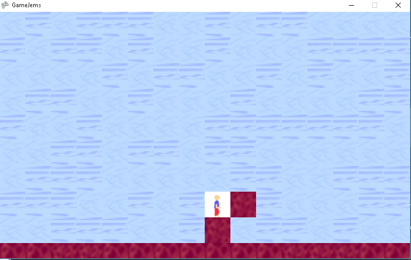

So, I had a strange time. With the programming I am relearning what I chose to do is focus on game development. Well... Yes... It has all completely changed since when I started this!
So for starting this off I want to share that I have taken the folding up XNA has done for building games. XNA is broken for me - I try to make a phone game and a copy on PC can't compile (and vice versa). What this made me want to do is change things up.
I am sharing what I have done for an attempt to make an engine that can be reused alot. Firstly for that I tried to use XNA and Monogame - unfortunately what I can share with that is I can't compile (or find a fix) Monogame projects at the moment. That has made me have a small part available for sharing here! No worries!
Firstly for the structure, take a look at the tree below (not code yet):
Engine Structure
BaconAvoEngine
-- ContentManager
-- GameTime
-- KeyboardState
-- SpriteBatch
Yes. I am taking structure generally from XNA but making changes to what I need and what it does.
What the engine currently holds is the connections to each element (shown below it). I will eventually add a "window" class for making different views showable and I want to make the stat it uses COMPLETELY random (how some people see it). I will make it have a guaranteed good way to pick what window is shown keeping any window updates needed on other windows. Can share more examples but lets leave it there currently...
The content manager is similar to the one in XNA - I will make a way to load things to show on the screen (such as sprites or font). It will take the content pipeline I am creating take shape in projects (and not make things smaller, e.g. images).
The game time is hopefully already understandable for you. For keeping track of how many seconds past or if its lagging. I will eventually make draw and updates attempt to have a fixed time.
Keyboard's state is simplified (and slightly more difficult than sharing what is also a possibility currently). You can check if keys are pressed. Haven't yet got times added to presses but that might be a future attempt.
Sprite batch isn't so simple. We need to make it so that it shows things on the screen. We aren't there yet...
Abstract BaconAvoEngine (C#)
public abstract class BaconAvoEngine
{
public ContentManager _contentManager;
public SpriteBatch _spriteBatch;
public KeyboardState _keyboardState;
public GameTime _gameTime;
public BaconAvoEngine()
{
this._contentManager = ContentManager.NewContentManager();
this._spriteBatch = SpriteBatch.NewSpriteBatch();
this._keyboardState = KeyboardState.NewKeyboarState();
this._gameTime = GameTime.NewGameTime(0, false, 0);
}
public abstract void Update(GameTime gameTime, KeyboardState keyboardState);
public abstract void Draw(GameTime gameTime, SpriteBatch spriteBatch);
public abstract void Load(ContentManager content);
}
So - the easiest to start with is the engine. We make an abstract class so that we can use it as an engine (or screen eventually) doing what we want to. We make references to all of the classes we will create (similar to how XNA is using them). So technically this isn't the screen part - we will make a screen - except the first instance and use of this is a lone screen. That is fine for us in this project.
I used these in this way creating this engine - so don't worry there. You can find all of it as I slowly increase it at
the github project. If stuff is done wrong, or needs changes, or currently I want to remove it (hope that's a no) it will show here.
We want to use the engine a lot of times for "attaching" what we are doing to the computer's "physics". I will use the term physics for what happens on the computer and for what we will be doing I will call part of the game engine. What we have chosen to do is have access to "content" (such as sprites, eventually 3D models, textures), "spritebatch" (drawing of sprites on the screen, since we want to have that for making 2D games, eventually will add a "3Dbatch" or something like that), "keyboardstate" (yes we want to use the keyboard first and creating this will be shared in a bit...), finally "gametime" (allowing stuff to be time based, which we will eventually add).
So yes, technically I don't need to go further into the explanation of those parts so I will just share the code and have some explanations (all code is C# so I wont keep writing C# in titles):
Content Manager
public class ContentManager
{
public static ContentManager NewContentManager()
{
_savedInstance = new ContentManager();
return _savedInstance;
}
private static ContentManager _savedInstance;
public static ContentManager UpdateContentManager()
{
if (_savedInstance == null) return NewContentManager();
return _savedInstance;
}
public T Load(string fileName)
{
Type serviceInterface = typeof(T);
if (serviceInterface.Equals(typeof(Sprite)))
return (T)(object)(new Sprite());
throw new Exception("BaconAvoEngine.Load can't use type used for Load this time.");
}
//todo: unload - might not need this since I will be using normal memory.
}
So yeah - we didn't need much in the creation. We did need to add a "type" loading code from files. We will eventually get to that I promise.
I also needed to learn "type" from scratch so I might keep doing it wrong in the future (and this might be wrong, sorry).
title
public class SpriteBatch
{
public static SpriteBatch NewSpriteBatch()
{
_savedInstance = new BaconAvoEngine.SpriteBatch();
return _savedInstance;
}
private static SpriteBatch _savedInstance;
public static SpriteBatch UpdateSpriteBatch()
{
if (_savedInstance == null) return NewSpriteBatch();
return _savedInstance;
}
//Start For Draw
public virtual void Begin() { throw new Exception("SpriteBatch.Begin was not made."); }
//End For Draw
public virtual void End() { throw new Exception("SpriteBatch.End was not made."); }
//Draw
public virtual void Draw(
Sprite sprite,
Vector4 position
) { throw new Exception("SpriteBatch.Draw was not made."); }
//Draw string
public virtual void DrawString(
string text,
Vector4 position /* Ignores width/height (you need to make the font large enough for your needs) */
) { throw new Exception("SpriteBatch.DrawString was not made."); }
}
So YES we added some exceptions. This is so we never forget to override functions (and sorry I don't yet know if these are correct to replace).
We want to (like XNA) start the "sprite drawing class", and end it. We also chose to make different code for strings and sprites. This is also showing off how eventually I might make a "3Dbatch".
KeyboardState
public class KeyboardState
{
private Key[] _keys;
public Key[] Keys {
get { return _keys; }
set { _keys = value; }
}
public bool IsKeyDown(Key check)
{
for (int i = 0; i < _keys.Count(); i++)
{
if (_keys[i] == check)
{
return _keys[i].Down;
}
}
return false;
}
//changes made to the usual defaults:
// - is Key Up IsKeyDown returns if its up or down
// - dont need "KeyboardState"
public static KeyboardState NewKeyboarState()
{
KeyboardState ks = new BaconAvoEngine.KeyboardState();
//put in all keys
_savedInstance.Keys = new Key[60];
var key = _savedInstance.Keys;
key[0] = new Key("`");
key[1] = new Key("1");
key[2] = new Key("2");
key[3] = new Key("3");
key[4] = new Key("4");
key[5] = new Key("5");
key[6] = new Key("6");
key[7] = new Key("7");
key[8] = new Key("8");
key[9] = new Key("9");
key[10] = new Key("0");
key[11] = new Key("-");
key[12] = new Key("=");
key[13] = new Key("BACKSPACE");
key[14] = new Key("TAB");
key[15] = new Key("Q");
key[16] = new Key("W");
key[17] = new Key("E");
key[18] = new Key("R");
key[19] = new Key("T");
key[20] = new Key("Y");
key[21] = new Key("U");
key[22] = new Key("I");
key[23] = new Key("O");
key[24] = new Key("P");
key[25] = new Key("[");
key[26] = new Key("]");
key[27] = new Key("ENTER");
key[28] = new Key("CAPSLOCK");
key[29] = new Key("A");
key[30] = new Key("S");
key[31] = new Key("D");
key[32] = new Key("F");
key[33] = new Key("G");
key[34] = new Key("H");
key[35] = new Key("J");
key[36] = new Key("K");
key[37] = new Key("L");
key[38] = new Key(";");
key[39] = new Key("'");
key[40] = new Key("\\");
key[41] = new Key("SHIFT");
key[42] = new Key("Z");
key[43] = new Key("X");
key[44] = new Key("C");
key[45] = new Key("V");
key[46] = new Key("B");
key[47] = new Key("N");
key[48] = new Key("M");
key[49] = new Key(",");
key[50] = new Key(".");
key[51] = new Key("/");
key[52] = new Key("CTRL");
key[53] = new Key("ALT");
key[54] = new Key("SPACE");
key[55] = new Key("LEFT");
key[56] = new Key("RIGHT");
key[57] = new Key("UP");
key[58] = new Key("DOWN");
key[59] = new Key("DEL");
return ks;
}
private static KeyboardState _savedInstance;
///
/// Libraries (such as XNA) give you this data.
/// This is the easy way to use it in the engine.
///
///
A list of keys that are pressed.
///
The current updated keyboard state.
public static KeyboardState UpdateKeyBoardState(List
presses)
{
if (_savedInstance == null)
{
return NewKeyboarState();
}
else
{
for (int i = 0; i < 59; i++)
{
if (presses.Contains(_savedInstance.Keys[i].Name))
{
_savedInstance.Keys[i].Down = true;
}
else
{
_savedInstance.Keys[i].Down = false;
}
}
}
return _savedInstance;
}
///
/// This was added to make code searching for stuff happening easier.
///
/// e.g. We can use the following line of code for an A press:
/// if (KeyboardState.IsKeyDown(Keys.A)) { ... }
/// Also you should know that in code used it might need changes
///
public static class KeyVal
{
public const string LeftAppostraphy = "`";
public const string Num1 = "1";
public const string Num2 = "2";
public const string Num3 = "3";
public const string Num4 = "4";
public const string Num5 = "5";
public const string Num6 = "6";
public const string Num7 = "7";
public const string Num8 = "8";
public const string Num9 = "9";
public const string Num0 = "0";
public const string Minus = "-";
public const string Equals = "=";
public const string Tab = "TAB";
public const string Q = "Q";
public const string W = "W";
public const string E = "E";
public const string R = "R";
public const string T = "T";
public const string Y = "Y";
public const string U = "U";
public const string I = "I";
public const string O = "O";
public const string P = "P";
public const string BracketLeft = "[";
public const string BracketRight = "]";
public const string Enter = "ENTER";
public const string CapsLock = "CAPSLOCK";
public const string A = "A";
public const string S = "S";
public const string D = "D";
public const string F = "F";
public const string G = "G";
public const string H = "H";
public const string J = "J";
public const string K = "K";
public const string L = "L";
public const string EndLineColon = ";";
public const string WordTop = "'";
public const string LineBack = "\\";
public const string Shift = "SHIFT";
public const string LineFront = "/";
public const string Z = "Z";
public const string X = "X";
public const string C = "C";
public const string V = "V";
public const string B = "B";
public const string N = "N";
public const string M = "M";
public const string Comma = ",";
public const string Fullstop = ".";
public const string Control = "CTRL";
public const string Alt = "ALT";
public const string Space = "SPACE";
public const string Left = "LEFT";
public const string Right = "RIGHT";
public const string Up = "UP";
public const string Down = "DOWN";
}
}
Yes. Keepying this summary short - I can't do this in an easy more correct way. Suggestions are all welcome!
GameTime
public class GameTime
{
public int ElapsedTime = 0;
public bool IsSlow = false;
public int ElapsedTotal = 0;
public static GameTime NewGameTime(int elapsed, bool isSlow, int totalElapsed)
{
GameTime gt = new BaconAvoEngine.GameTime();
gt.ElapsedTime = elapsed;
gt.IsSlow = isSlow;
gt.ElapsedTotal = totalElapsed;
return gt;
}
private static GameTime _savedInstance;
public static GameTime UpdateGameTime(int elapsed, bool isSlow, int totalElapsed)
{
if (_savedInstance == null)
{
_savedInstance = NewGameTime(elapsed, isSlow, totalElapsed);
}
else
{
_savedInstance.ElapsedTime = elapsed;
_savedInstance.IsSlow = isSlow;
_savedInstance.ElapsedTotal = totalElapsed;
}
return _savedInstance;
}
}
This is simple. We want to use the times the libraries give (like Monogame, etc) in an easy way in our engine.
Yes - I have done 50% of what I wanted to. No worries there. I will get it all in the end in the future. Can say it will take me long to post changes because "blogging" takes me a while (since I'm not using "blog software" or "websites" I could have).
What I will do next time is the following:
1) Change some of the engine code.
2) Hopefully show a working game in everything available to me (XNA, monogame, etc).
3) Give 3 extra games that I will make and the sprites to make them so you can try them yourself.

Yes I wanted to show I am getting there with a game. Nearly have it that my XNA code is usable in XNA with my engine. Getting there.